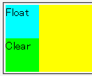
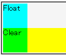

フロートの後方に親子関係を持つボックスがあるとき、親要素の開始タグと子要素の開始タグが隣接している状態で子要素にclearプロパティを指定すると、子要素だけでなく親要素のボックスも回り込みが抑制されてしまう。
黄色の背景領域は、フロートボックスとclearプロパティを指定したボックスの両方に掛かるはずです。
Opera7.23標準モード
WinIE6.0標準モード
以下のいずれかに該当する場合、この不具合は発生しません。